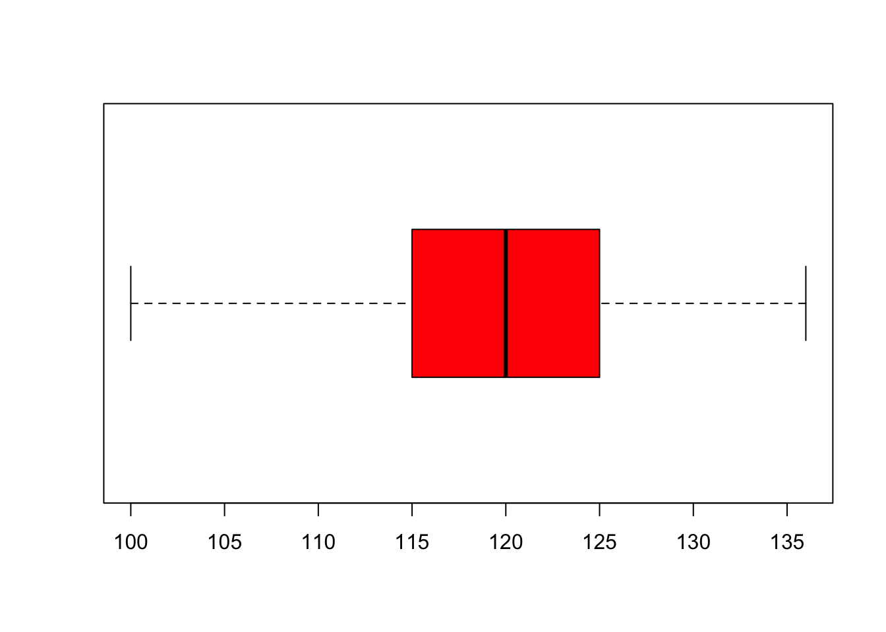
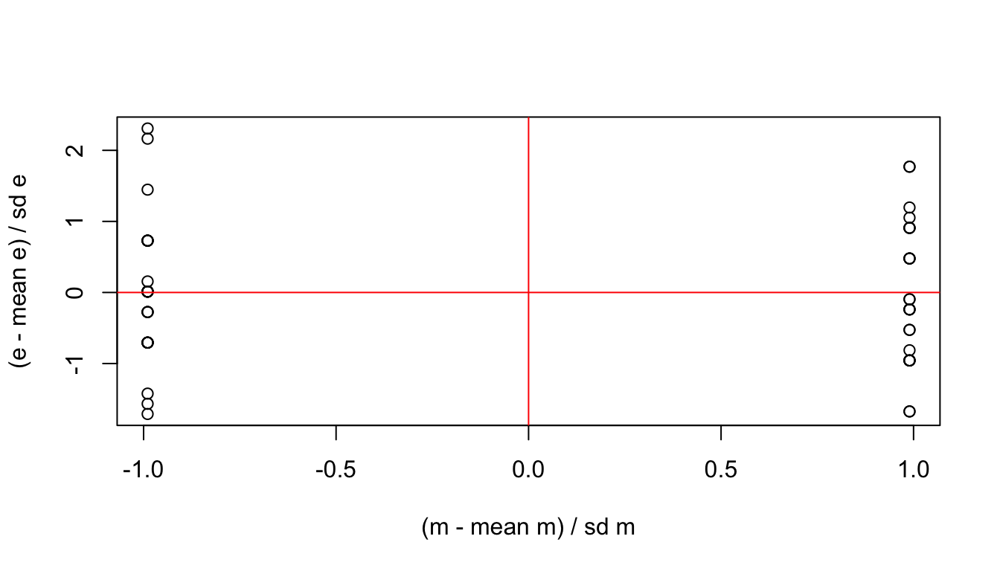

IQ estimations of people in the front and in the back. We want to know the differences in the population, not the sample. We therefore want to make an inference about the population, hence the name inferential statistics.
The means indirectly represent the parameters \(b\)’s in this regression model. These \(b\)’s are the estimates of the population parameters \(\beta\)’s.

But what if these means are not correct, because of an extreme outlier.
Outliers
Outliers can have a huge impact on the estimations
Trim Delete based on boxplot.
Trim Delete based on 3 standard deviations.
Trim Trimmed mean: Delete upper and lower percentages.
Winsorizing Replace outliers with highest non outlier.
Without these outliers the results look a bit different.
We can check this by looking at the scatterplot of the predictors with the outcome variable.
Normality
Parameter estimates \(b\)’s
Confidence intervals (SE * 1.196)
“Null hypothesis significance testing”
Errors
Not the normality of the sample but the normality of the parameter \(\beta\) in the population. We will test this assumption based on the data, though with large samples the centrel limit theorem ensures that the parameters are bell shaped.
Centrel limit theorem
Normality
You can look at:
Skewness and Kurtosis
We can test with:
Kolmogorov-Smirnof test
Shapiro-Wilk test
But, the bigger the sample the smaller the \(p\)-value at equal test statistic. So we are losing power at large samples.
We can also transform the variable
Homoscedasticity/homogenity of variance
Influences:
Parameters \(b\)’s
NHT
The null hypothesis assumes the null distribution to be true. Therefore, different sampples from that districution should have equal variances. Otherwise the assumption could not hold.
In general, we can say that on every value of the predictor variable the variances in the outcome variable should be equal.
We can check this by plotting the standardised error/resiual and the standardised expected outcome/model.

Lineairiteit
Independence
The observed outcome (rows in SPSS or participants in your research) should be independent from each other. The answer of person B should not depend on the answer of person A.